W <- c(3.3,3.5,3.6,3.6,3.7,3.8,
3.8,3.8,3.9,3.9,3.9,4.0,
4.0,4.0,4.0,4.1,4.1,4.1,
4.2,4.2,4.3,4.3,4.4,4.5)2 Fundamendos Básicos
2.1 Definición de Estadística
- Estadística:
La estadística es la ciencia de los datos. Consiste en recoger, clasificar, resumir, organizar analizar e interpretar la información numérica. (McClave and Sincich 2003)
La estadística es el análisis y la interpretación de los datos con vistas a una evaluación objetiva de la fiabilidad de las conclusiones basadas en los datos. (Zar 1999)
2.1.1 Rol de la Estadística en el Pesamiento Crítico
La capacidad de utilizar el pensamiento racional para interpretar el significado de los datos
Esta capacidad puede ayudarle a tomar decisiones inteligentes, inferencias y generalizaciones
2.1.2 Parámetros en estadísticas
El objetivo principal del análisis estadístico es inferir los parámetros de la población a partir de una muestra.
Palabra “Parámetro” se refiere a las Poblaciones, e.j., µ, σ (i.e., letras Griegas)
Palabra “Estadígrafo” (Statistics) se refiere a las Muestras, e.j., X, Sx (i.e., letras latinas)
Estadígrafos pueden variar de muestra a muestra.
Queremos que estos Estadígrafos sean buenas representaciones de los parámetros de la población.
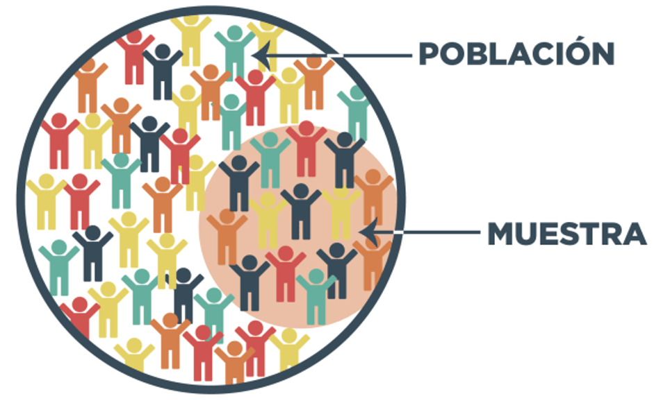
2.1.3 Tipos de Estadística
Dos tipos principales de estadística:
- Descriptiva
Utiliza métodos numéricos y gráficos para buscar patrones en un conjunto de datos, para resumir la información revelada en un conjunto de datos y presentar esa información en una forma conveniente.
- Inferencial
Es una estimación, predicción o alguna otra generalización sobre una población basada en la información contenida en una muestra.
2.2 Estadística Descriptiva
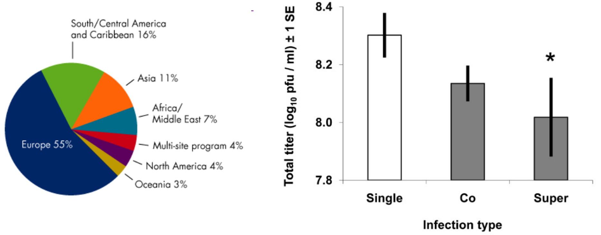
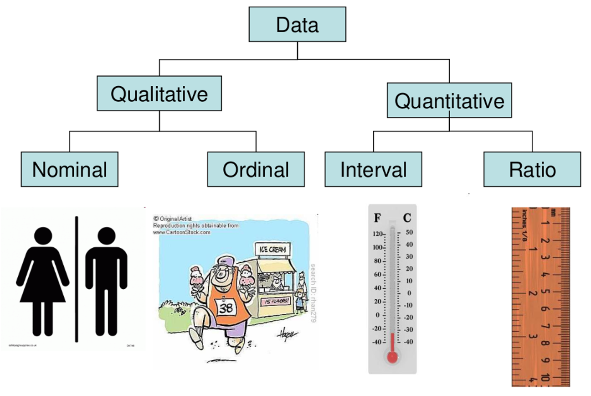
2.2.1 Muestras reperesentativas
- Contiene características similares o típicas de la población.
- La forma más común de obtener muestras representativas es mediante selección aleatoria.
- Una muestra aleatoria garantiza que cada subconjunto de tamaño fijo de la población tiene la misma probabilidad de ser incluido en la muestra
2.2.2 Consideraciones de la Estadísticas Descriptiva
- Definir la población o muestra de interés
- Definir las variables o características de la población que se van a investigar.
- Definir el tipo de estadística descriptiva a usar: gráficos, tablas, valores de resumen
- Identificar patrones en los datos.
2.3 Medidas de Tendencias Central
flowchart LR
A{Medidas de Tendencia Central}
A --> C[Moda]:::class_c1
A --> D[Mediana]:::class_c1
A --> E[Media]:::class_c1
style A fill:#5D6D7E,color:#fff
classDef class_c1 fill:#1ABC9C,color:#fff
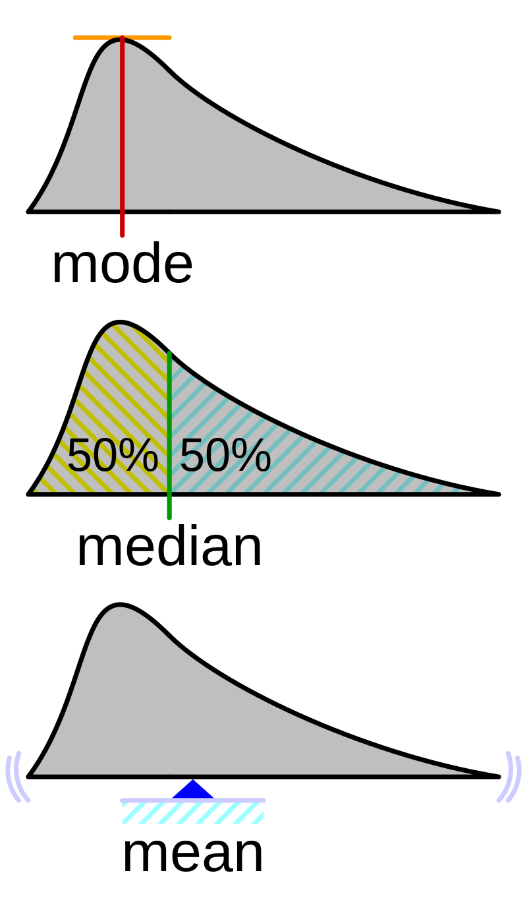
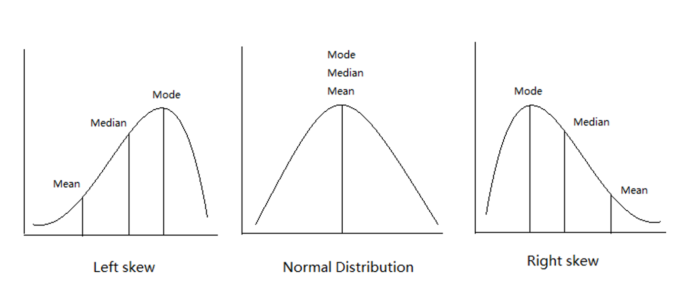
(Zar 1999)
2.3.1 Media Aritmética
- Definición:
-
La media aritmética es un concepto matemático usado en estadística. También llamada promedio o simplemente media, se obtiene con la suma de un conjunto de valores dividida entre el número total de sumandos. Detalles en Wikipedia.
\mu=\frac{\displaystyle\sum_{i=1}^{N}X_i}{N}
- X_i: cada observación de la población/muestra
- N: tamaño de la población o muestra
Ejemplo de Media Aritmétrica con R
Muestra de 24 registros de población de mariposas cuyo valor corresponde a el largo en cm.
\displaystyle\sum_{i=1}^{N}X_i=95cm
sum(W)[1] 95\mu=\frac{\displaystyle\sum_{i=1}^{N}X_i}{N}=3.96 cm
mean(W)[1] 3.958333ma <- function(vector){
N = length(vector)
ma = sum(vector)/N
return(ma)
}
ma(W)[1] 3.958333hist(W, col = "gray97")
abline(v=mean(W), col="red")
2.3.2 Mediana
- Definición:
-
En el ámbito de la estadística, la mediana (del latín medianus ‘del medio’) representa el valor de la variable de posición central en un conjunto de datos ordenados. Se le denota mediana, si la serie tiene un número par de puntuaciones, la mediana es la media entre las dos puntuaciones centrales.
Detalles en wikipedia
- Es el valor del medio de un set de datos ordenados.
- Se puede entender también como el valor donde está el 50% de los datos.
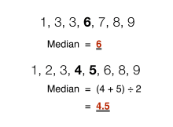
sort(W) [1] 3.3 3.5 3.6 3.6 3.7 3.8 3.8 3.8 3.9 3.9 3.9 4.0 4.0 4.0 4.0 4.1 4.1 4.1 4.2
[20] 4.2 4.3 4.3 4.4 4.5median(W)[1] 42.3.3 Moda
- Definición:
-
En la estadística, la moda es el valor que aparece con mayor frecuencia en un conjunto de datos. Esto va en forma de una columna cuando encontremos dos modas, es decir, dos datos que tengan la misma frecuencia absoluta máxima. Una distribución trimodal de los datos es en la que encontramos tres modas. En el caso de la distribución uniforme discreta, cuando todos los datos tienen una misma frecuencia, se puede definir las modas como indicado, pero estos lores no tienen utilidad. Por eso algunos matemáticos califican esta distribución como “sin moda”.
Detalles en wikipedia
Valor más frecuente en un set de datos.
table(W)W
3.3 3.5 3.6 3.7 3.8 3.9 4 4.1 4.2 4.3 4.4 4.5
1 1 2 1 3 3 4 3 2 2 1 1 En R no existe una función específica pero se puede crear una:
moda <- function(x) {
uniqv <- unique(x)
uniqv[which.max(tabulate(match(x, uniqv)))]
}
moda(W)[1] 42.4 Medidas de Dispersión y Variabilidad
2.4.1 Rango
- Definición:
-
Diferencia entre el valor más alto y más bajo de la muestra
Warning
Rango de la muestra subestima el rango de la población (problema con los extremos)
Ej., botánicos lo usan para medir las dimensiones de hojas y flores.
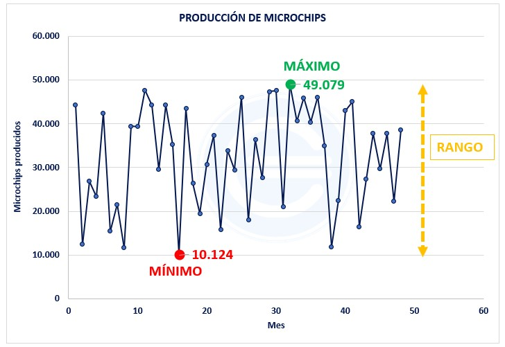
max(W) - min(W)[1] 1.2Retorna los valores mínimos y máximos de la muestra
range(W) [1] 3.3 4.52.4.2 Cuartiles, Cuantiles y Percentiles
- Cuartiles:
-
Dividen la población en 4 partes iguales, describiendo los valores acumulados al 0%, 25%, 50%, 75% y 100% (steps de 25%).
- Cuantiles y Percentiles:
-
Describen lo mismo, pero no necesariamente se divide la muestra en 4 partes. Ej., se puede dividir en 10: 0%, 10%, 20%, 30%, 40%, 50%, 60%, 70%, 80%, 90%, 100%
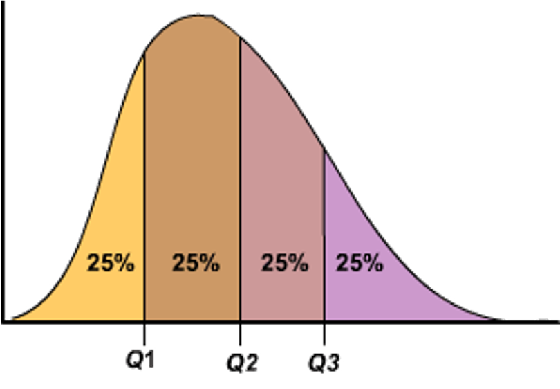
quantile(W) 0% 25% 50% 75% 100%
3.300 3.800 4.000 4.125 4.500 quantile(W, probs = c(0.05, 0.25, 0.5, 0.75, 0.95)) # 5% 25% 50% 75% 95%
3.515 3.800 4.000 4.125 4.385 2.4.3 Rango Intercuartil (IQR)
- Distancia entre Q1 y Q3, el primer y segundo cuartil (25% y 75%).
- Más robusto que el rango normal
- No afectan los outliars.
IQR = Q3 - Q1
Rango intercuantil IQR = 75% - 25%
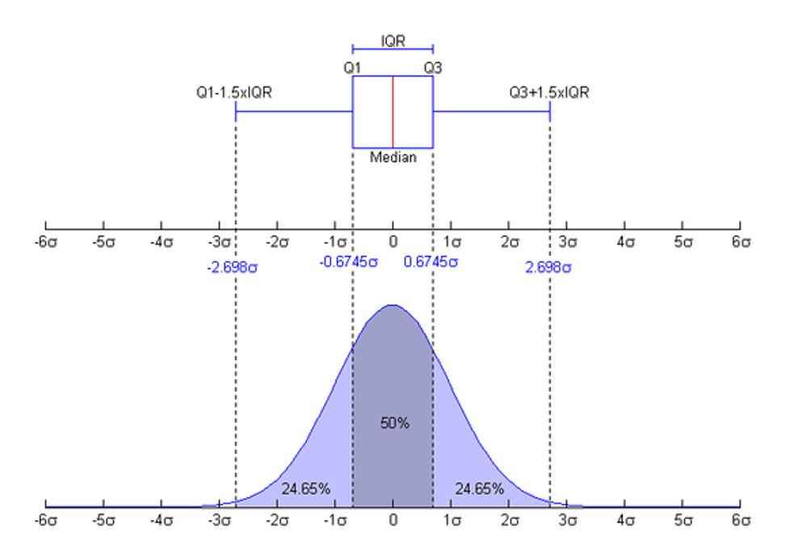
quantile(W, 0.75) - quantile(W, 0.25) 75%
0.325 quantile(W)[4] - quantile(W)[2] 75%
0.325 2.4.4 Varianza
- Suma de los cuadrados (SS) de las desviaciones de la media.
- Describe la dispersión media en torno al valor medio
Datos Población Total
\sigma^2 = \frac{\displaystyle\sum_{i=1}^{n}(X_i - \mu)^2} {N}
Datos Muestrales
S^2 = \frac{\displaystyle\sum_{i=1}^{n}(X_i - \bar{X})^2} {n-1}
- Wikipedia: (“Varianza” 2022)
- Video: (Matemáticas profe Alex 2017)
var(W)[1] 0.085144932.4.5 Desviación Estándar
Es una medida que se utiliza para cuantificar la variación o la dispersión de un conjunto de datos numéricos.
Una desviación estándar baja indica que la mayor parte de los datos de una muestra tienden a estar agrupados cerca de su media (también denominada el valor esperado), mientras que una desviación estándar alta indica que los datos se extienden sobre un rango de valores más amplio.
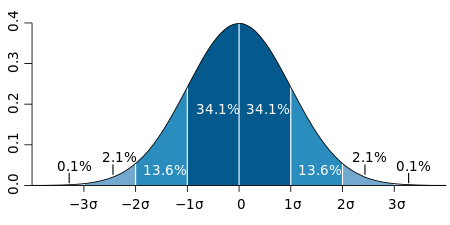
Desviación Estándar paraDatos Población Total
\sigma = \sqrt{\frac{\displaystyle\sum_{i=1}^{n}(X_i - \mu)^2} {N}}
Desviación Estándar para Datos Muestrales:
S = \sqrt{\frac{\displaystyle\sum_{i=1}^{n}(X_i - \bar{X})^2} {n-1}}
W <- c(3.3,3.5,3.6,3.6,3.7,3.8,
3.8,3.8,3.9,3.9,3.9,4.0,
4.0,4.0,4.0,4.1,4.1,4.1,
4.2,4.2,4.3,4.3,4.4,4.5)\sigma = \sqrt{\frac{\displaystyle\sum_{i=1}^{n}(X_i - \mu)^2} {N}}
sd(W)[1] 0.291796
# graficar la +- 1 DE y +- 2 DE en un histograma?
hist(W)
abline(v=mean(W), col='red')
## +- 1 DE ---------------------------------------------------------------
abline(v=mean(W)+sd(W), col='blue')
abline(v=mean(W)-sd(W), col='blue')
## +- 2 DE ---------------------------------------------------------------
abline(v=mean(W)+sd(W)*2, col='green')
abline(v=mean(W)-sd(W)*2, col='green')2.4.6 Coeficiente de Variación
- Cómo la desviación estándar, pero normalizado a un porcentaje.
- Sirve para comparar la variación entre datos de distintas poblaciones/muestras!
V=\frac{s}{\bar{X}}
sd(W) / mean(W) * 100[1] 7.3716892.4.7 índices de Diversidad
- En el caso de los datos de escala nominal, no existe una media o una mediana que sirva de referencia para hablar de la dispersión
- Podemos invocar el concepto de diversidad, la distribución de las observaciones entre las categorías
- Observaciones distribuidas uniformemente en las categorías tienen Diversidad alta, mientras que observaciones que ocurren en pocas clases tiene Div. baja.
2.4.7.1 Shannon-Wiener diversity index
H'= \sum_{i=1}^k {p_i \ log \ p_i}
- K = número de clases
- P_i proporción de obs. de la clases i
2.4.7.2 Shannon-Wiener evenness index (índice de uniformidad)
J' = \frac{H'}{H_{max}} \qquad H_{max}= log\ k
2.4.7.3 Datos con una dimensión 1D
| especies | frecuencia |
|---|---|
| a | 44 |
| b | 3 |
| c | 28 |
| d | 12 |
| e | 2 |
| f | 8 |
H'= \sum_{i=1}^k {p_i \ log \ p_i}
especies <- c('a','b','c','d','e','f')
frecuencia <- c(44,3,28,12,2,8)
# funcion manual para vector de 1D
diversidad <- function(x){
x <- x/(total <- sum(x)) # Proporcion de cada especie
x <- -x * log(x, exp(1))
H <- sum(x, na.rm = TRUE)
H
}diversidad(frecuencia)[1] 1.369117Ejemplo en R de ídice de diversidad con la función diversity() de la librería vegan.
| especies | frecuencia |
|---|---|
| a | 44 |
| b | 3 |
| c | 28 |
| d | 12 |
| e | 2 |
| f | 8 |
library(vegan)
diversity(frecuencia) [1] 1.3691172.4.7.4 Datos con más de una dimensión
Lectura de datos
Barro Colorado Island Tree Counts: Tree counts in 1-hectare plots in the Barro Colorado Island and associated site information.
data(BCI)
data(BCI.env)Cálculo de BCI
#### Diversity ---------------------------------------------------------
div <- diversity(BCI)
div 1 2 3 4 5 6 7 8
4.018412 3.848471 3.814060 3.976563 3.969940 3.776575 3.836811 3.908381
9 10 11 12 13 14 15 16
3.761331 3.889803 3.859814 3.698414 3.982373 4.017494 3.956635 3.916821
17 18 19 20 21 22 23 24
3.736897 3.944985 4.013094 4.077327 3.969925 3.755413 4.062575 3.979427
25 26 27 28 29 30 31 32
4.074718 3.947749 3.980281 3.693896 3.688721 3.851598 3.724967 3.784873
33 34 35 36 37 38 39 40
3.740392 3.821669 2.641859 3.846109 3.791703 3.516082 3.530494 3.234849
41 42 43 44 45 46 47 48
4.052495 3.966614 3.736254 3.705016 3.609518 3.810489 3.920918 3.913725
49 50
3.778851 3.906616 Analizar gradientes entre diversidad y variables
# analizar gradientes entre diversidad y variables
plot(x = div, y = BCI.env$Precipitation)
abline(h=2530, col="red")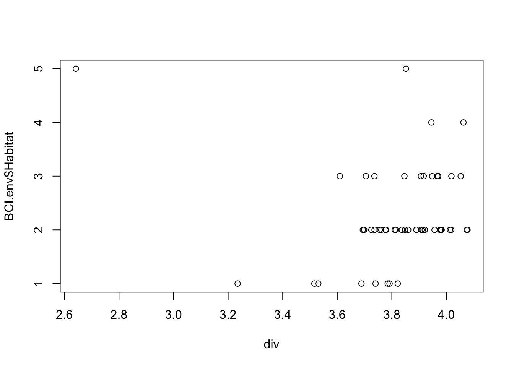
plot(x = div, y = BCI.env$Habitat)